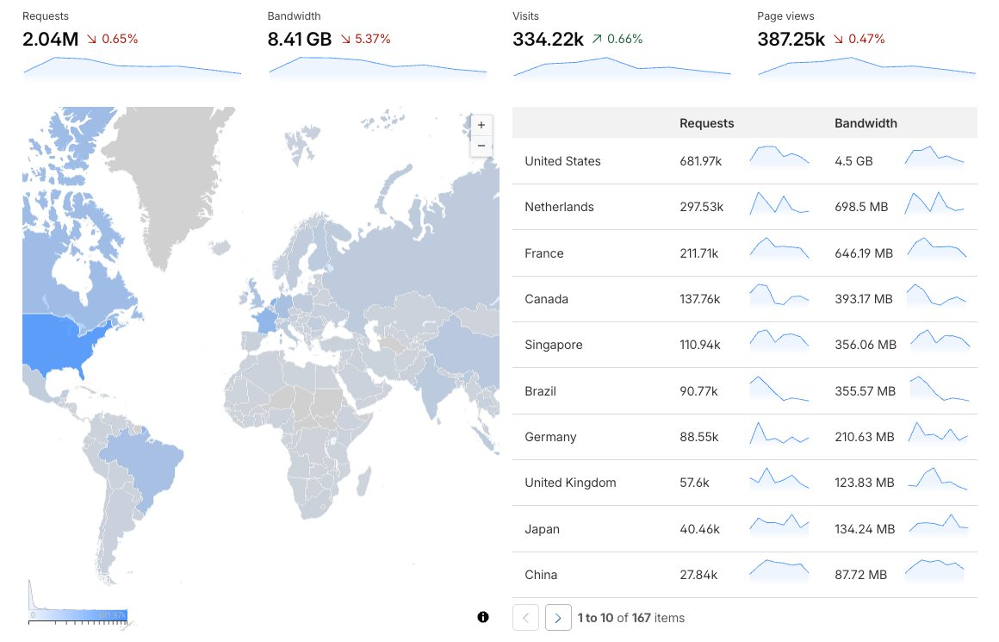
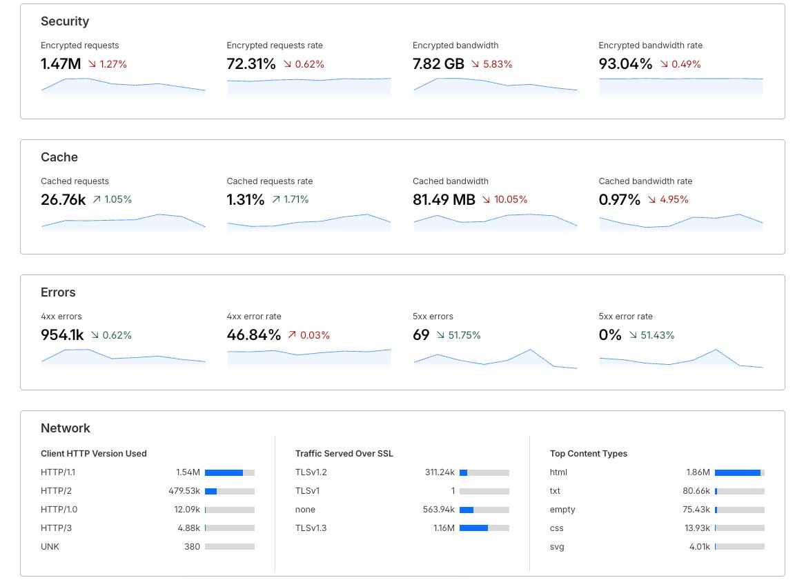

Software engineer working at the architecture and orchestration layer — with the engineering judgment to review, debug and ship what the AI produces.


I'm based on the Costa del Sol and I build production automation for the businesses serving the international money moving here — real estate, relocation, the agencies behind them. Same timezone, English-native B2B, and working software you can click, not slideware.
Selling Costa del Sol property to British, German and Scandinavian buyers means listings in every language, ranking in every market. I built an engine that does it in one pass — native copy for six markets with the SEO built in.
See it live · Polyhaus →Every enquiry from a relocating family is a lead you can't afford to drop. I build front desks that read, qualify and book inbound enquiries automatically — and chase the quiet ones until they convert.
You win the international client; I'm the reliable build partner behind the automation and web work — production-grade, owned end to end, handed over so it keeps running.
Let's talk →On the coast, on CET, working in English — happy to start with a small paid test task.
Production demos — real automation running live, not mockups. Each handles a real business problem end to end.
Turns one property into publish-ready listings for six markets — each written natively for its buyers (not translated), with SEO and structured data built in.
View live demo · Polyhaus →An AI front desk that turns an inbound enquiry into a qualified, booked appointment — triaging by urgency and handling it end to end, without a human in the loop.
View live demo · Reception →Reads, routes, and replies to incoming service requests, then chases the quiet ones until they convert — recovering leads that would otherwise go cold.
View live demo · Intake →I turn manual, repetitive work into production LLM pipelines that run unattended — with guardrails and real error handling, not toy demos.
Next.js (App Router) at scale on Vercel, DNS/CDN via Cloudflare. Automated provisioning and config-driven deploys across 100+ markets.
GTM/GA4 rollout across multi-locale networks: config-driven injection, GEO-correct container mapping, execution-level QA. hreflang / canonical / sitemap / robots done right. This site is instrumented exactly this way.
Rebuild and operate a large network of content sites — work that normally needs a small team — without it collapsing under manual overhead.
Automated provisioning (60–90 sites/mo), LLM content & processing pipelines on the Claude API, Next.js builds on Vercel, DNS/CDN on Cloudflare, and a config-driven GTM/GA4 + technical-SEO layer across every locale.
1,000+ domains rebuilt, 15 live properties serving ~43,500 requests/day to 160+ countries — maintained end-to-end by a single engineer.
Engineer with 5+ years of front-end foundation, now working at the architecture and orchestration layer: I design the technical solution and direct AI tools (Anthropic's Claude API) to implement it, applying the engineering judgment to structure the problem, review the code, debug and ship product that works.
Over the past year I've built and operated 100+ production sites solo; the live network serves ~43,500 requests/day across 160+ countries with 0% 5xx errors. My edge isn't just using AI — it's knowing when it's wrong.
Tell me what's eating your team's time. If it's repetitive and lives between an LLM and your stack, I can probably automate it.